Comprehensive Guide to Alluvial Diagrams in ClinicoPath
ClinicoPath Development Team
2025-07-12
Source:vignettes/clinicopath-descriptives-05-alluvial.Rmd
clinicopath-descriptives-05-alluvial.RmdIntroduction
Alluvial diagrams are powerful visualization tools for displaying
categorical data flows and relationships between multiple categorical
variables. The ClinicoPath package provides comprehensive alluvial
diagram functionality through the alluvial() function,
which offers extensive customization options for clinical and
pathological research.
This vignette demonstrates all available features and parameters of the alluvial function using real clinical datasets.
Loading Required Libraries and Data
library(ClinicoPath)
# Load the histopathology dataset
data("histopathology")
# Preview the data structure
str(histopathology[, c("Sex", "Race", "Group", "Grade_Level", "LVI", "PNI", "PreinvasiveComponent")])
#> tibble [250 × 7] (S3: tbl_df/tbl/data.frame)
#> $ Sex : chr [1:250] "Male" "Female" "Male" "Male" ...
#> $ Race : chr [1:250] "White" "White" "White" "White" ...
#> $ Group : chr [1:250] "Control" "Treatment" "Control" "Treatment" ...
#> $ Grade_Level : chr [1:250] "high" "low" "low" "high" ...
#> $ LVI : chr [1:250] "Present" "Absent" "Absent" "Present" ...
#> $ PNI : chr [1:250] "Absent" "Absent" "Absent" "Absent" ...
#> $ PreinvasiveComponent: chr [1:250] "Present" "Absent" "Absent" "Absent" ...Basic Alluvial Diagrams
Simple Three-Variable Flow
The most basic alluvial diagram shows the flow between three categorical variables:
# Basic alluvial diagram
alluvial(
data = histopathology,
vars = c("Sex", "Grade_Level", "LVI")
)
#>
#> ALLUVIAL DIAGRAMS
#>
#> character(0)
#> [1] "Number of flows: 15"
#> [1] "Original Dataframe reduced to 6 %"
#> [1] "Maximum weight of a single flow 11.6 %"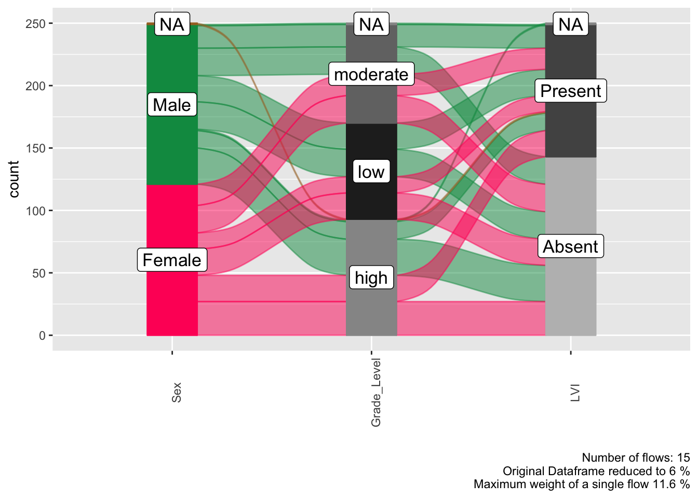
Four-Variable Analysis
Extend the analysis to show more complex relationships:
# Four-variable alluvial diagram
alluvial(
data = histopathology,
vars = c("Sex", "Race", "Group", "Grade_Level")
)
#>
#> ALLUVIAL DIAGRAMS
#>
#> character(0)
#> [1] "Number of flows: 53"
#> [1] "Original Dataframe reduced to 21.2 %"
#> [1] "Maximum weight of a single flow 8.4 %"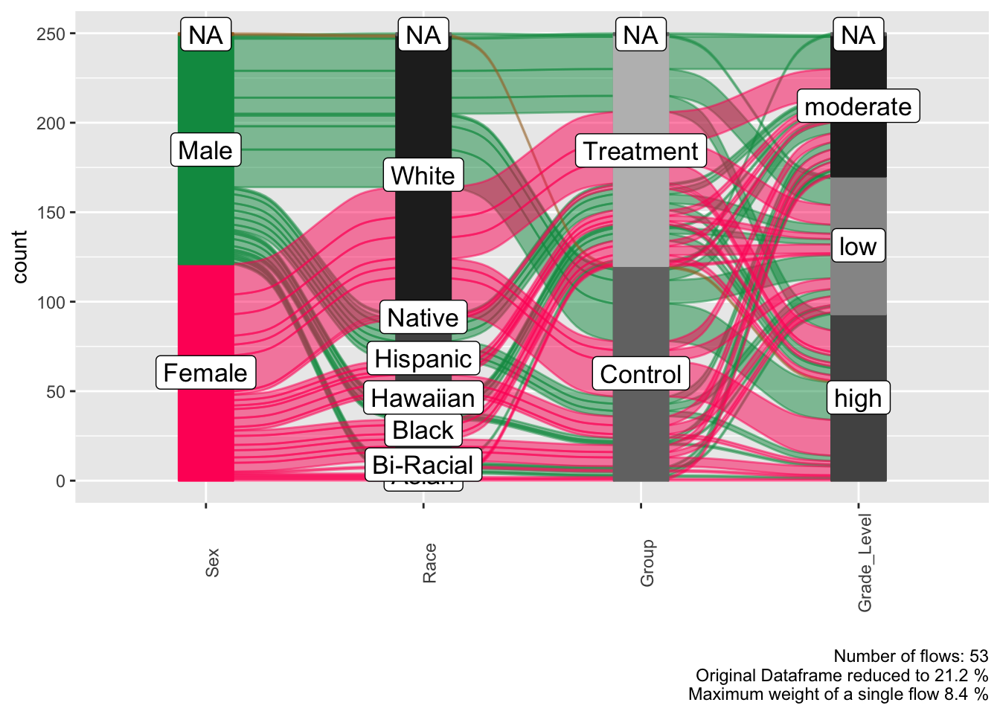
Fill Color Options
The fill parameter controls how flows are colored in the
diagram:
Fill by First Variable (Default)
# Color flows based on the first variable
alluvial(
data = histopathology,
vars = c("Sex", "Grade_Level", "LVI", "PNI"),
fill = "first_variable"
)
#>
#> ALLUVIAL DIAGRAMS
#>
#> character(0)
#> [1] "Number of flows: 28"
#> [1] "Original Dataframe reduced to 11.2 %"
#> [1] "Maximum weight of a single flow 7.6 %"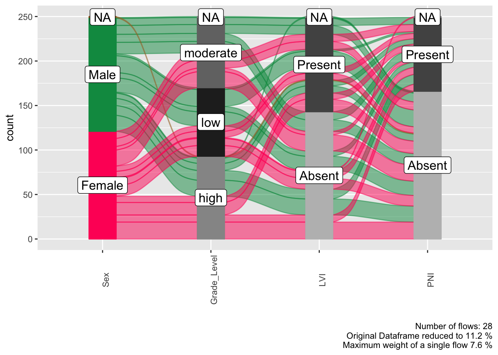
Fill by Last Variable
# Color flows based on the last variable
alluvial(
data = histopathology,
vars = c("Sex", "Grade_Level", "LVI", "PNI"),
fill = "last_variable"
)
#>
#> ALLUVIAL DIAGRAMS
#>
#> character(0)
#> [1] "Number of flows: 28"
#> [1] "Original Dataframe reduced to 11.2 %"
#> [1] "Maximum weight of a single flow 7.6 %"
Fill by All Flows
# Color each unique flow path differently
alluvial(
data = histopathology,
vars = c("Sex", "Race", "Group"),
fill = "all_flows"
)
#>
#> ALLUVIAL DIAGRAMS
#>
#> character(0)
#> [1] "Number of flows: 24"
#> [1] "Original Dataframe reduced to 9.6 %"
#> [1] "Maximum weight of a single flow 16.8 %"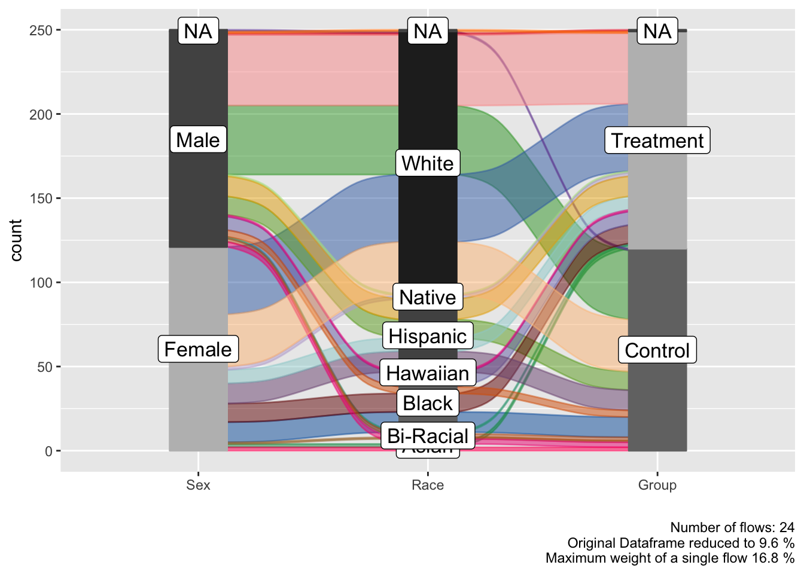

Bin Labeling Options
For continuous variables that are automatically binned, you can control the bin labels:
Default Binning
# Default bin labels: LL, ML, M, MH, HH
alluvial(
data = histopathology,
vars = c("Sex", "Grade_Level", "Group"),
bin = "default"
)
#>
#> ALLUVIAL DIAGRAMS
#>
#> character(0)
#> [1] "Number of flows: 15"
#> [1] "Original Dataframe reduced to 6 %"
#> [1] "Maximum weight of a single flow 11.6 %"
Mean-Based Binning
# Bin labels based on mean values
alluvial(
data = histopathology,
vars = c("Sex", "Race", "Grade_Level"),
bin = "mean"
)
#>
#> ALLUVIAL DIAGRAMS
#>
#> character(0)
#> [1] "Number of flows: 32"
#> [1] "Original Dataframe reduced to 12.8 %"
#> [1] "Maximum weight of a single flow 12.8 %"
Median-Based Binning
# Bin labels based on median values
alluvial(
data = histopathology,
vars = c("Group", "Grade_Level", "LVI"),
bin = "median"
)
#>
#> ALLUVIAL DIAGRAMS
#>
#> character(0)
#> [1] "Number of flows: 15"
#> [1] "Original Dataframe reduced to 6 %"
#> [1] "Maximum weight of a single flow 12.8 %"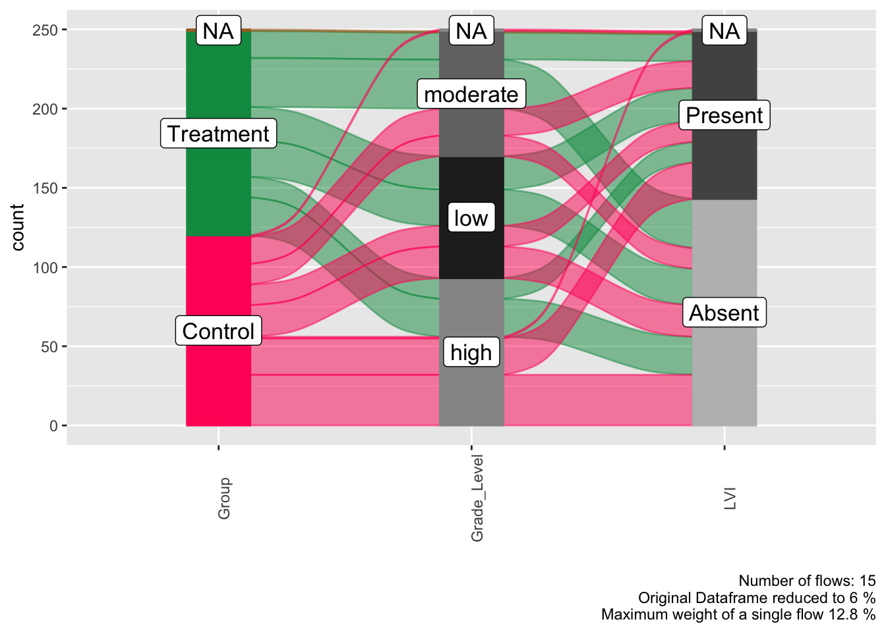
Min-Max Binning
# Bin labels showing min-max ranges
alluvial(
data = histopathology,
vars = c("Sex", "Group", "Grade_Level"),
bin = "min_max"
)
#>
#> ALLUVIAL DIAGRAMS
#>
#> character(0)
#> [1] "Number of flows: 15"
#> [1] "Original Dataframe reduced to 6 %"
#> [1] "Maximum weight of a single flow 11.6 %"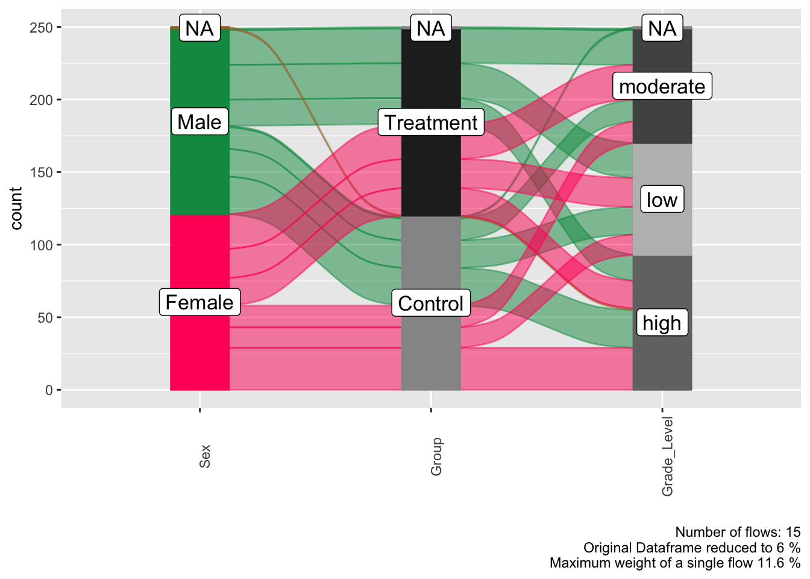
Cut-Based Binning
# Bin labels based on cut points
alluvial(
data = histopathology,
vars = c("Race", "Grade_Level", "LVI"),
bin = "cuts"
)
#>
#> ALLUVIAL DIAGRAMS
#>
#> character(0)
#> [1] "Number of flows: 33"
#> [1] "Original Dataframe reduced to 13.2 %"
#> [1] "Maximum weight of a single flow 14.8 %"
Plot Orientation
Control whether the diagram flows vertically or horizontally:
Vertical Orientation (Default)
# Vertical flow (default)
alluvial(
data = histopathology,
vars = c("Sex", "Race", "Group"),
orient = "vert"
)
#>
#> ALLUVIAL DIAGRAMS
#>
#> character(0)
#> [1] "Number of flows: 24"
#> [1] "Original Dataframe reduced to 9.6 %"
#> [1] "Maximum weight of a single flow 16.8 %"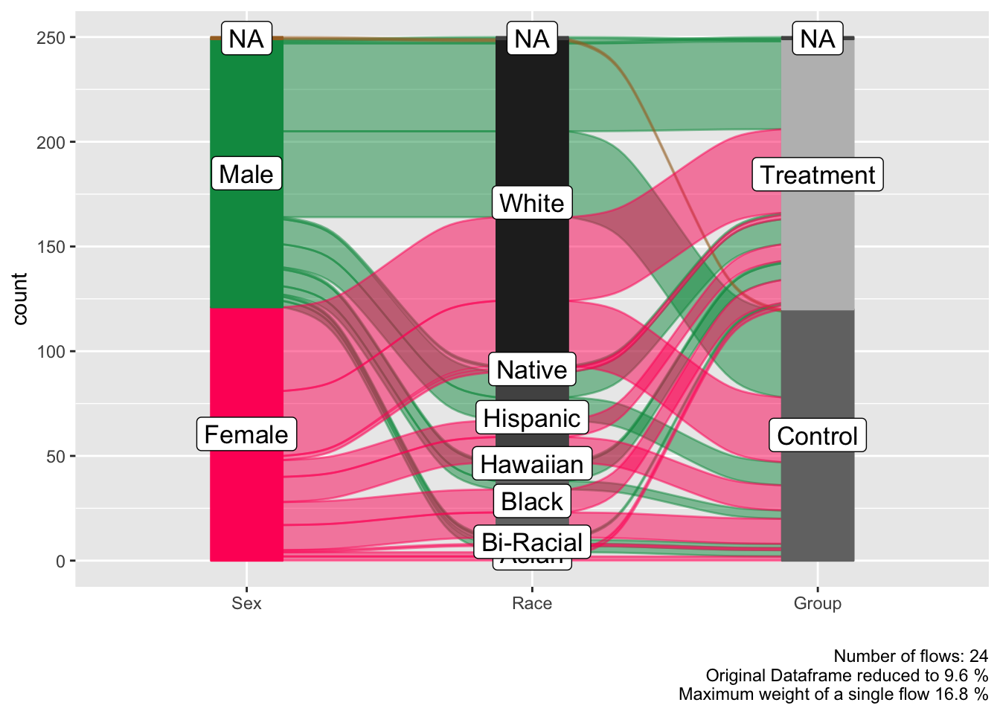
Marginal Plots
Add marginal histograms to show the distribution of each variable (only available with vertical orientation):
# Alluvial diagram with marginal histograms
alluvial(
data = histopathology,
vars = c("Sex", "Grade_Level", "LVI"),
marg = TRUE,
orient = "vert" # Required for marginal plots
)
#>
#> ALLUVIAL DIAGRAMS
#>
#> character(0)
#> [1] "Number of flows: 15"
#> [1] "Original Dataframe reduced to 6 %"
#> [1] "Maximum weight of a single flow 11.6 %"
#> TableGrob (10 x 1) "arrange": 4 grobs
#> z cells name grob
#> 1 1 ( 2- 2, 1- 1) arrange gtable[arrange]
#> 2 2 ( 3- 9, 1- 1) arrange gtable[layout]
#> 3 3 ( 1- 1, 1- 1) arrange text[GRID.text.2303]
#> 4 4 (10-10, 1- 1) arrange text[GRID.text.2304]Custom Titles
Add custom titles to your diagrams (cannot be used with marginal plots):
# Alluvial diagram with custom title
alluvial(
data = histopathology,
vars = c("Sex", "Race", "Group", "Grade_Level"),
usetitle = TRUE,
mytitle = "Patient Demographics and Clinical Characteristics Flow",
marg = FALSE # Custom titles cannot be used with marginal plots
)
#>
#> ALLUVIAL DIAGRAMS
#>
#> character(0)
#> [1] "Number of flows: 53"
#> [1] "Original Dataframe reduced to 21.2 %"
#> [1] "Maximum weight of a single flow 8.4 %"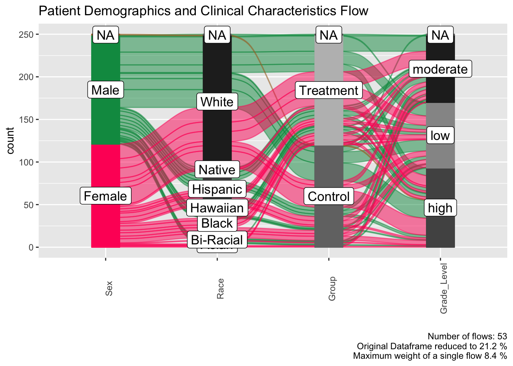
Missing Value Handling
Control how missing values are handled in the analysis:
Include Missing Values (Default)
# Include missing values in the analysis
alluvial(
data = histopathology,
vars = c("Sex", "PreinvasiveComponent", "LVI"),
excl = FALSE
)
#>
#> ALLUVIAL DIAGRAMS
#>
#> character(0)
#> [1] "Number of flows: 11"
#> [1] "Original Dataframe reduced to 4.4 %"
#> [1] "Maximum weight of a single flow 24.8 %"
Exclude Missing Values
# Exclude missing values from the analysis
alluvial(
data = histopathology,
vars = c("Sex", "PreinvasiveComponent", "LVI"),
excl = TRUE
)
#>
#> ALLUVIAL DIAGRAMS
#>
#> character(0)
#> [1] "Number of flows: 8"
#> [1] "Original Dataframe reduced to 3.2 %"
#> [1] "Maximum weight of a single flow 25.1 %"
Condensation Plots
Create condensation plots to show how a specific variable relates to the overall flow:
# Main alluvial diagram with condensation analysis
alluvial(
data = histopathology,
vars = c("Grade_Level", "LVI", "PNI"),
condensationvar = "Sex", # This will generate a second plot
fill = "first_variable"
)
#>
#> ALLUVIAL DIAGRAMS
#>
#> character(0)
#> [1] "Number of flows: 15"
#> [1] "Original Dataframe reduced to 6 %"
#> [1] "Maximum weight of a single flow 14.8 %"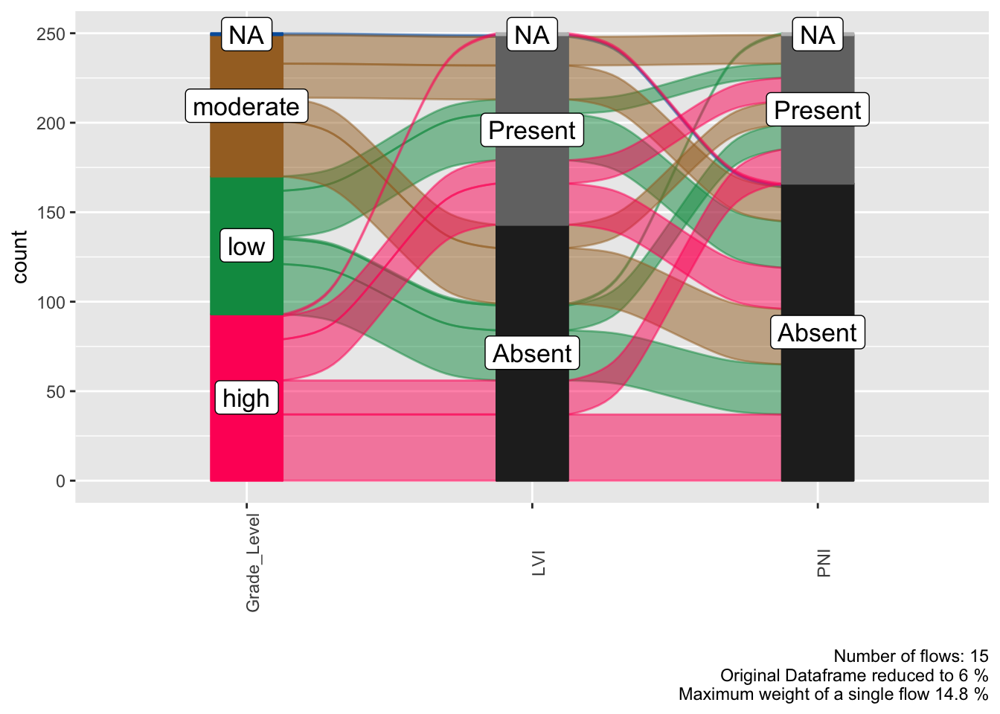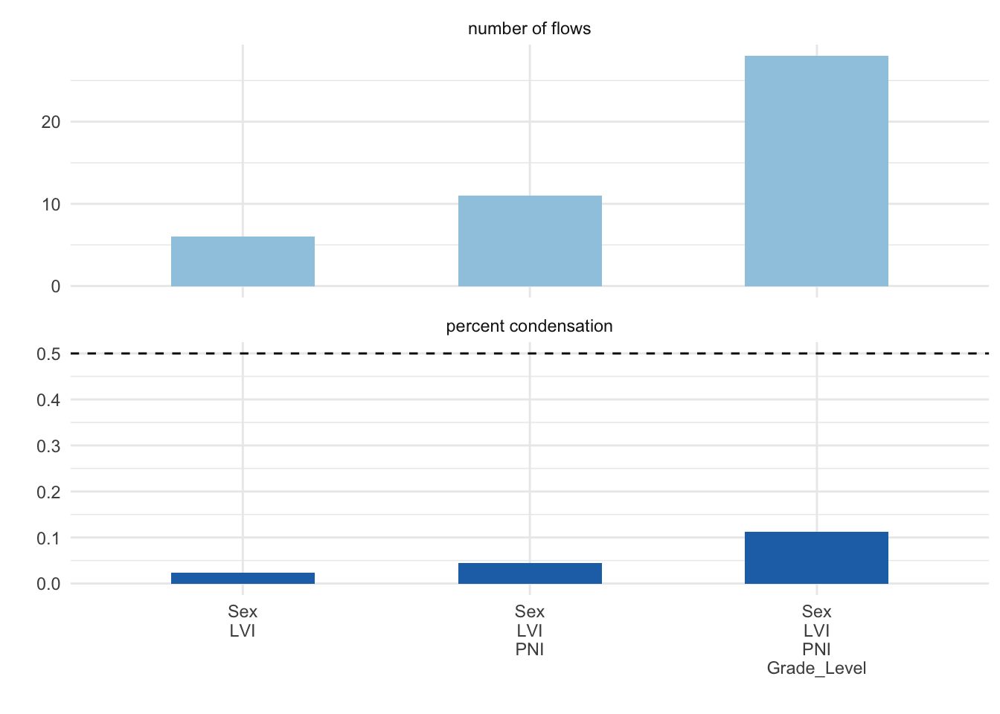
The condensation plot shows how the selected variable
(Sex in this example) relates to the patterns in the main
alluvial diagram.
Advanced Examples
Comprehensive Clinical Analysis
# Comprehensive analysis with multiple parameters
alluvial(
data = histopathology,
vars = c("Sex", "Race", "Group", "Grade_Level", "LVI"),
condensationvar = "PNI",
excl = TRUE,
fill = "all_flows",
bin = "median",
orient = "vert",
usetitle = TRUE,
mytitle = "Comprehensive Histopathological Characteristics Analysis"
)
#>
#> ALLUVIAL DIAGRAMS
#>
#> character(0)
#> [1] "Number of flows: 81"
#> [1] "Original Dataframe reduced to 33.1 %"
#> [1] "Maximum weight of a single flow 5.3 %"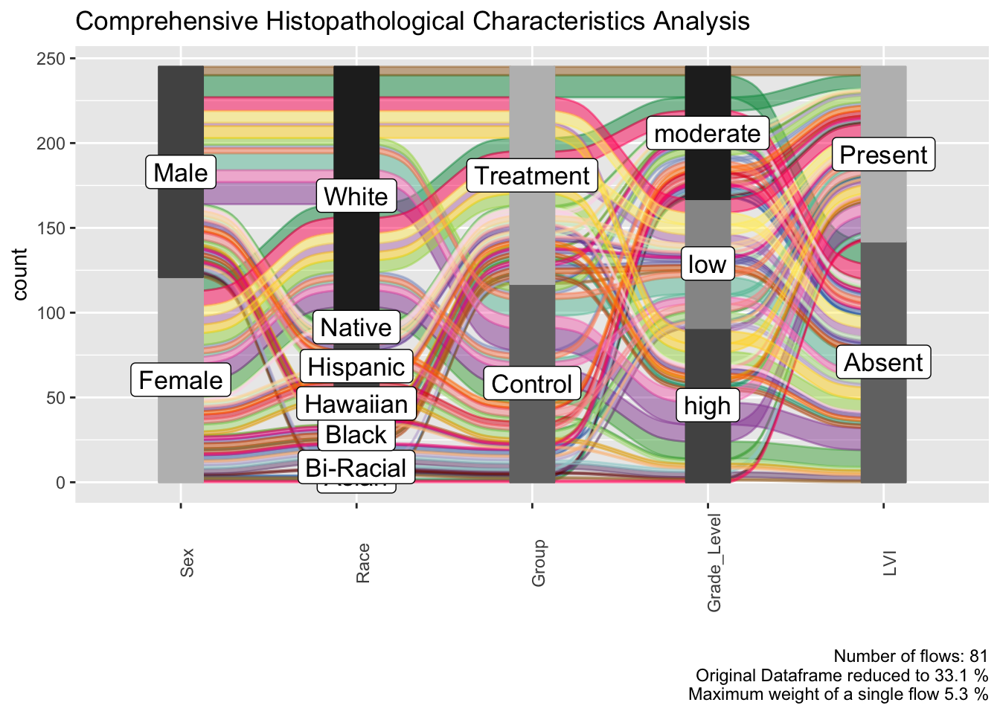
Treatment Response Analysis
# Create treatment response data for alluvial plot
set.seed(123)
treatment_data <- data.frame(
PreTreatment = sample(c("None", "Chemotherapy", "Radiation"), 100, replace = TRUE),
Treatment = sample(c("Surgery", "Chemotherapy", "Immunotherapy", "Combination"), 100, replace = TRUE),
Response = sample(c("Complete", "Partial", "Stable", "Progressive"), 100, replace = TRUE)
)
# Use ggalluvial directly since jamovi functions don't work well in R Markdown
library(ggalluvial)
library(ggplot2)
ggplot(treatment_data, aes(axis1 = PreTreatment, axis2 = Treatment, axis3 = Response)) +
geom_alluvium(aes(fill = PreTreatment), width = 1/12) +
geom_stratum(width = 1/12, fill = "black", color = "grey") +
geom_label(stat = "stratum", aes(label = after_stat(stratum))) +
scale_x_discrete(limits = c("PreTreatment", "Treatment", "Response"), expand = c(.05, .05)) +
scale_fill_brewer(type = "qual", palette = "Set1") +
ggtitle("Treatment Response Pathways") +
theme_minimal()
Survival Analysis Flow
# Using colon cancer dataset
data("colon")
# Analyze factors leading to outcomes
alluvial(
data = colon,
vars = c("sex", "differ", "extent", "node4"),
fill = "last_variable",
excl = TRUE,
usetitle = TRUE,
mytitle = "Colon Cancer Prognostic Factors Flow"
)
#>
#> ALLUVIAL DIAGRAMS
#>
#> character(0)
#> [1] "Number of flows: 4"
#> [1] "Original Dataframe reduced to 0.2 %"
#> [1] "Maximum weight of a single flow 38.2 %"
Parameter Combinations and Constraints
Important Constraints
-
Marginal plots (
marg = TRUE) can only be used with:- Vertical orientation (
orient = "vert") - No custom titles (
usetitle = FALSE)
- Vertical orientation (
-
Custom titles (
usetitle = TRUE) cannot be used with:- Marginal plots (
marg = FALSE)
- Marginal plots (
- Condensation variables generate a second plot automatically
Valid Parameter Combinations
# Valid: Marginal plots with vertical orientation
alluvial(
data = histopathology,
vars = c("Sex", "Grade_Level", "LVI"),
marg = TRUE,
orient = "vert",
usetitle = FALSE
)
#>
#> ALLUVIAL DIAGRAMS
#>
#> character(0)
#> [1] "Number of flows: 15"
#> [1] "Original Dataframe reduced to 6 %"
#> [1] "Maximum weight of a single flow 11.6 %"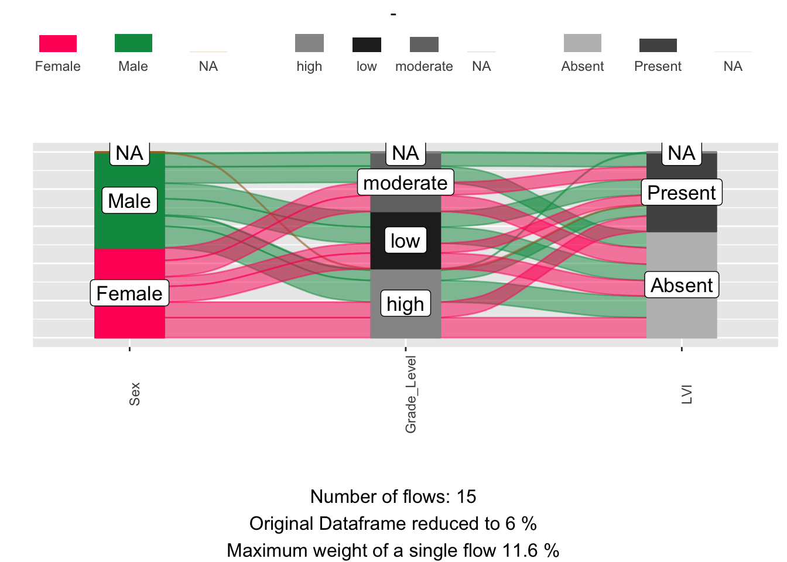
#> TableGrob (10 x 1) "arrange": 4 grobs
#> z cells name grob
#> 1 1 ( 2- 2, 1- 1) arrange gtable[arrange]
#> 2 2 ( 3- 9, 1- 1) arrange gtable[layout]
#> 3 3 ( 1- 1, 1- 1) arrange text[GRID.text.4019]
#> 4 4 (10-10, 1- 1) arrange text[GRID.text.4020]
# Valid: Custom title with horizontal orientation
alluvial(
data = histopathology,
vars = c("Sex", "Race", "Group"),
marg = FALSE,
orient = "horr",
usetitle = TRUE,
mytitle = "Horizontal Flow Diagram"
)
#>
#> ALLUVIAL DIAGRAMS
#>
#> character(0)
#> [1] "Number of flows: 24"
#> [1] "Original Dataframe reduced to 9.6 %"
#> [1] "Maximum weight of a single flow 16.8 %"
# Valid: All flow coloring with median binning
alluvial(
data = histopathology,
vars = c("Grade_Level", "LVI", "PNI", "PreinvasiveComponent"),
fill = "all_flows",
bin = "median",
excl = TRUE
)
#>
#> ALLUVIAL DIAGRAMS
#>
#> character(0)
#> [1] "Number of flows: 24"
#> [1] "Original Dataframe reduced to 9.8 %"
#> [1] "Maximum weight of a single flow 13 %"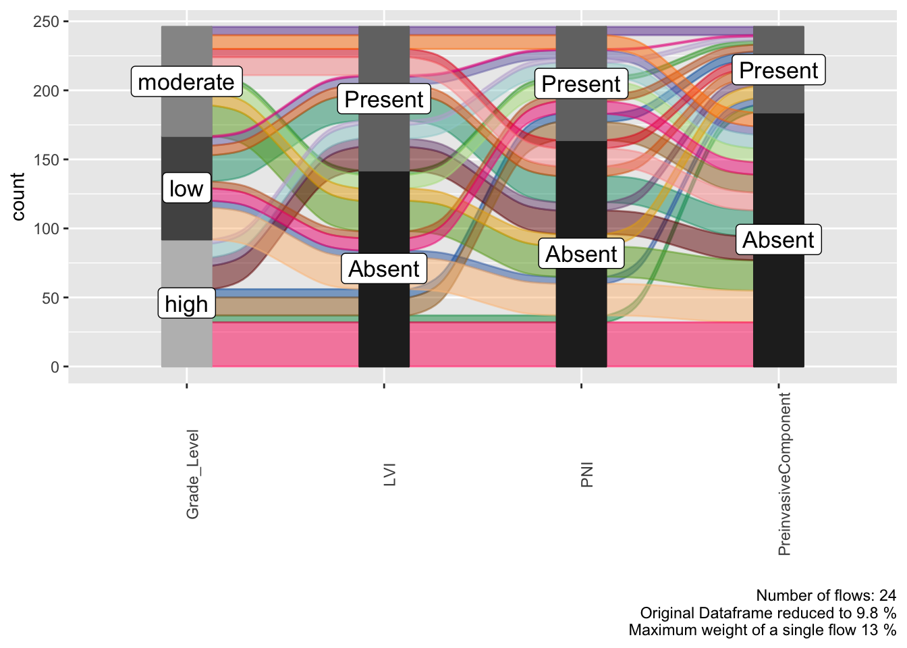
Complete Parameter Reference
The alluvial() function supports the following
parameters:
| Parameter | Type | Options | Default | Description |
|---|---|---|---|---|
vars |
Variables | - | Required | Variables for the alluvial diagram |
condensationvar |
Variable | - | NULL |
Variable for condensation plot |
excl |
Boolean |
TRUE/FALSE
|
FALSE |
Exclude missing values |
marg |
Boolean |
TRUE/FALSE
|
FALSE |
Include marginal histograms |
fill |
List |
first_variable, last_variable,
all_flows, values
|
first_variable |
Color fill strategy |
bin |
List |
default, mean, median,
min_max, cuts
|
default |
Bin labeling method |
orient |
List |
vert, horr
|
vert |
Plot orientation |
usetitle |
Boolean |
TRUE/FALSE
|
FALSE |
Use custom title |
mytitle |
String | - | "Alluvial Plot" |
Custom title text |
Best Practices
- Variable Selection: Choose 3-6 categorical variables that have logical relationships
- Data Preparation: Ensure categorical variables are properly formatted
- Missing Values: Decide whether to include or exclude missing values based on your analysis goals
- Color Strategy: Choose fill options that highlight the most important relationships
- Orientation: Use vertical for detailed analysis, horizontal for presentation
- Sample Size: Alluvial diagrams work best with moderate sample sizes (50-500 cases)
Interpretation Guidelines
- Flow Width: Represents the number of cases following that path
- Color Consistency: Same colors represent the same categories across variables
- Branching Patterns: Show how categories split or merge between variables
- Condensation Plots: Reveal how a specific variable influences overall patterns
Conclusion
The ClinicoPath alluvial function provides comprehensive functionality for visualizing categorical data flows in clinical research. With 9 customizable parameters and dual plot capabilities, it supports both exploratory analysis and publication-ready visualizations for understanding complex relationships in clinical and pathological data.
Session Information
sessionInfo()
#> R version 4.5.1 (2025-06-13)
#> Platform: aarch64-apple-darwin20
#> Running under: macOS Sequoia 15.5
#>
#> Matrix products: default
#> BLAS: /Library/Frameworks/R.framework/Versions/4.5-arm64/Resources/lib/libRblas.0.dylib
#> LAPACK: /Library/Frameworks/R.framework/Versions/4.5-arm64/Resources/lib/libRlapack.dylib; LAPACK version 3.12.1
#>
#> locale:
#> [1] en_US.UTF-8/en_US.UTF-8/en_US.UTF-8/C/en_US.UTF-8/en_US.UTF-8
#>
#> time zone: Europe/Istanbul
#> tzcode source: internal
#>
#> attached base packages:
#> [1] stats graphics grDevices utils datasets methods base
#>
#> other attached packages:
#> [1] ggalluvial_0.12.5 ggplot2_3.5.2 ClinicoPath_0.0.3.53
#>
#> loaded via a namespace (and not attached):
#> [1] igraph_2.1.4 plotly_4.11.0 Formula_1.2-5
#> [4] rematch2_2.1.2 cutpointr_1.2.1 timeROC_0.4
#> [7] tidyselect_1.2.1 vtree_5.1.9 lattice_0.22-7
#> [10] stringr_1.5.1 lgr_0.4.4 parallel_4.5.1
#> [13] caret_7.0-1 dichromat_2.0-0.1 png_0.1-8
#> [16] cli_3.6.5 bayestestR_0.16.1 askpass_1.2.1
#> [19] arsenal_3.6.3 openssl_2.3.3 ggeconodist_0.1.0
#> [22] countrycode_1.6.1 pkgdown_2.1.3 textshaping_1.0.1
#> [25] paradox_1.0.1 purrr_1.0.4 officer_0.6.10
#> [28] naivebayes_1.0.0 stars_0.6-8 broom.mixed_0.2.9.6
#> [31] ggflowchart_1.0.0 ggoncoplot_0.1.0 curl_6.4.0
#> [34] strucchange_1.5-4 mime_0.13 evaluate_1.0.4
#> [37] coin_1.4-3 V8_6.0.4 stringi_1.8.7
#> [40] pROC_1.18.5 backports_1.5.0 desc_1.4.3
#> [43] mlr3extralearners_1.0.0 lmerTest_3.1-3 XML_3.99-0.18
#> [46] Exact_3.3 tinytable_0.10.0 lubridate_1.9.4
#> [49] httpuv_1.6.16 paletteer_1.6.0 mlr3viz_0.10.1
#> [52] magrittr_2.0.3 rappdirs_0.3.3 splines_4.5.1
#> [55] prodlim_2025.04.28 r2rtf_1.1.4 KMsurv_0.1-6
#> [58] BiasedUrn_2.0.12 survminer_0.5.0 logger_0.4.0
#> [61] dplyr_1.1.4 epiR_2.0.84 wk_0.9.4
#> [64] palmerpenguins_0.1.1 networkD3_0.4.1 DT_0.33
#> [67] lpSolve_5.6.23 rootSolve_1.8.2.4 DBI_1.2.3
#> [70] terra_1.8-54 jquerylib_0.1.4 withr_3.0.2
#> [73] reformulas_0.4.1 class_7.3-23 systemfonts_1.2.3
#> [76] lmtest_0.9-40 rprojroot_2.0.4 leaflegend_1.2.1
#> [79] RefManageR_1.4.0 htmlwidgets_1.6.4 fs_1.6.6
#> [82] waffle_1.0.2 ggvenn_0.1.10 labeling_0.4.3
#> [85] gtsummary_2.3.0 cellranger_1.1.0 summarytools_1.1.4
#> [88] extrafont_0.19 lmom_3.2 zoo_1.8-14
#> [91] raster_3.6-32 knitr_1.50 ggcharts_0.2.1
#> [94] gt_1.0.0 timechange_0.3.0 foreach_1.5.2
#> [97] dcurves_0.5.0 patchwork_1.3.1 visNetwork_2.1.2
#> [100] grid_4.5.1 data.table_1.17.8 timeDate_4041.110
#> [103] pan_1.9 gsDesign_3.6.9 quantreg_6.1
#> [106] psych_2.5.6 extrafontdb_1.0 DiagrammeR_1.0.11
#> [109] sparsevctrs_0.3.4 clintools_0.9.10.1 DescTools_0.99.60
#> [112] lazyeval_0.2.2 yaml_2.3.10 leaflet_2.2.2
#> [115] easyalluvial_0.3.2 useful_1.2.6.1 survival_3.8-3
#> [118] crosstable_0.8.1 lwgeom_0.2-14 crayon_1.5.3
#> [121] RColorBrewer_1.1-3 tidyr_1.3.1 progressr_0.15.1
#> [124] tweenr_2.0.3 later_1.4.2 jtools_2.3.0
#> [127] microbenchmark_1.5.0 ggridges_0.5.6 mlr3measures_1.0.0
#> [130] codetools_0.2-20 base64enc_0.1-3 labelled_2.14.1
#> [133] shape_1.4.6.1 estimability_1.5.1 gdtools_0.4.2
#> [136] data.tree_1.1.0 foreign_0.8-90 pkgconfig_2.0.3
#> [139] grafify_5.0.0.1 xml2_1.3.8 ggpubr_0.6.1
#> [142] performance_0.15.0 viridisLite_0.4.2 xtable_1.8-4
#> [145] bibtex_0.5.1 car_3.1-3 plyr_1.8.9
#> [148] httr_1.4.7 rbibutils_2.3 tools_4.5.1
#> [151] globals_0.18.0 hardhat_1.4.1 cols4all_0.8
#> [154] htmlTable_2.4.3 broom_1.0.8 checkmate_2.3.2
#> [157] nlme_3.1-168 MatrixModels_0.5-4 regions_0.1.8
#> [160] survMisc_0.5.6 maptiles_0.10.0 crosstalk_1.2.1
#> [163] assertthat_0.2.1 lme4_1.1-37 digest_0.6.37
#> [166] numDeriv_2016.8-1.1 Matrix_1.7-3 tmap_4.1
#> [169] furrr_0.3.1 farver_2.1.2 tzdb_0.5.0
#> [172] reshape2_1.4.4 viridis_0.6.5 pec_2023.04.12
#> [175] rapportools_1.2 ModelMetrics_1.2.2.2 gghalves_0.1.4
#> [178] rpart_4.1.24 mice_3.18.0 glue_1.8.0
#> [181] cachem_1.1.0 ggswim_0.1.0 polyclip_1.10-7
#> [184] UpSetR_1.4.0 Hmisc_5.2-3 generics_0.1.4
#> [187] visdat_0.6.0 classInt_0.4-11 stats4_4.5.1
#> [190] mvtnorm_1.3-3 survey_4.4-2 powerSurvEpi_0.1.5
#> [193] ggfortify_0.4.18 parallelly_1.45.0 ISOweek_0.6-2
#> [196] mnormt_2.1.1 here_1.0.1 ggmice_0.1.0
#> [199] ragg_1.4.0 fontBitstreamVera_0.1.1 carData_3.0-5
#> [202] minqa_1.2.8 httr2_1.1.2 giscoR_0.6.1
#> [205] tcltk_4.5.1 rpart.plot_3.1.2 glmnet_4.1-9
#> [208] coefplot_1.2.8 eurostat_4.0.0 jmvcore_2.6.3
#> [211] spacesXYZ_1.6-0 gower_1.0.2 mitools_2.4
#> [214] readxl_1.4.5 datawizard_1.1.0 fontawesome_0.5.3
#> [217] ggsignif_0.6.4 timereg_2.0.6 party_1.3-18
#> [220] gridExtra_2.3 shiny_1.11.1 lava_1.8.1
#> [223] tmaptools_3.2 parameters_0.27.0 arcdiagram_0.1.12
#> [226] rmarkdown_2.29 TidyDensity_1.5.0 pander_0.6.6
#> [229] mlr3misc_0.18.0 scales_1.4.0 gld_2.6.7
#> [232] svglite_2.2.1 future_1.58.0 fontLiberation_0.1.0
#> [235] DiagrammeRsvg_0.1 ggpp_0.5.9 km.ci_0.5-6
#> [238] rstudioapi_0.17.1 janitor_2.2.1 cluster_2.1.8.1
#> [241] hms_1.1.3 anytime_0.3.11 colorspace_2.1-1
#> [244] jomo_2.7-6 rlang_1.1.6 s2_1.1.9
#> [247] pivottabler_1.5.6 ipred_0.9-15 ggforce_0.5.0
#> [250] kknn_1.4.1 mgcv_1.9-3 xfun_0.52
#> [253] coda_0.19-4.1 e1071_1.7-16 TH.data_1.1-3
#> [256] modeltools_0.2-24 matrixStats_1.5.0 benford.analysis_0.1.5
#> [259] recipes_1.3.1 iterators_1.0.14 emmeans_1.11.1
#> [262] randomForest_4.7-1.2 abind_1.4-8 tibble_3.3.0
#> [265] libcoin_1.0-10 ggrain_0.0.4 readr_2.1.5
#> [268] Rdpack_2.6.4 promises_1.3.3 sandwich_3.1-1
#> [271] proxy_0.4-27 compiler_4.5.1 forcats_1.0.0
#> [274] leaflet.providers_2.0.0 boot_1.3-31 distributional_0.5.0
#> [277] tableone_0.13.2 SparseM_1.84-2 polynom_1.4-1
#> [280] listenv_0.9.1 Rcpp_1.1.0 Rttf2pt1_1.3.12
#> [283] fontquiver_0.2.1 DataExplorer_0.8.3 datefixR_1.7.0
#> [286] rms_8.0-0 units_0.8-7 MASS_7.3-65
#> [289] uuid_1.2-1 insight_1.3.1 R6_2.6.1
#> [292] fastmap_1.2.0 multcomp_1.4-28 rstatix_0.7.2
#> [295] ROCR_1.0-11 vcd_1.4-13 mitml_0.4-5
#> [298] ggdist_3.3.3 nnet_7.3-20 gtable_0.3.6
#> [301] leafem_0.2.4 KernSmooth_2.23-26 irr_0.84.1
#> [304] gtExtras_0.6.0 htmltools_0.5.8.1 tidyplots_0.3.1.9000
#> [307] leafsync_0.1.0 polspline_1.1.25 lifecycle_1.0.4
#> [310] sf_1.0-21 zip_2.3.3 kableExtra_1.4.0
#> [313] pryr_0.1.6 nloptr_2.2.1 mlr3_1.0.1
#> [316] mlr3learners_0.12.0 sass_0.4.10 vctrs_0.6.5
#> [319] snakecase_0.11.1 flextable_0.9.9 haven_2.5.5
#> [322] sp_2.2-0 pracma_2.4.4 future.apply_1.20.0
#> [325] bslib_0.9.0 pillar_1.11.0 magick_2.8.7
#> [328] moments_0.14.1 jsonlite_2.0.0 expm_1.0-0